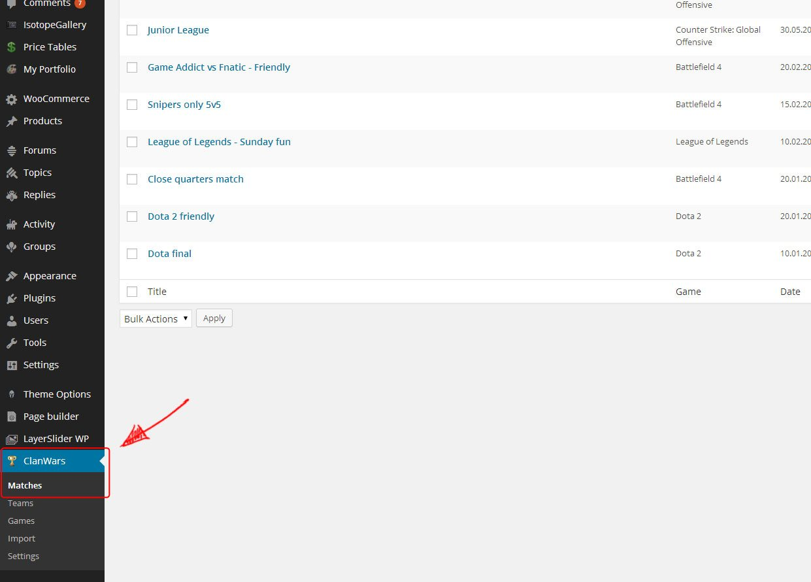

- Support: support.skywarriorthemes.com
To view this theme in its full beauty please use Chrome or Firefox. IE makes kittens cry and everybody loves kittens... right?
Installation
To install this theme you must have a working version of WordPress already installed. For more info on how to install WordPress please see the WordPress Codex: http://codex.WordPress.org/Installing_WordPress
Extract the zipped package downloaded from ThemeForest to your desktop, in the extracted package you will find the game-addict.zip file which is the WordPress theme.
You can install the theme in two ways:
-
FTP: Extract game-addict.zip file and upload the extracted folder to the /wp-content/themes/ folder on your server. Change the ftp client transfer mode to Binary if you haven't done it already: Click here if you don't know how.
WordPress: Navigate to the Appearance -> Add New Themes -> Upload page. Select the game-addict.zip file. Press the Install Now button to upload and install the theme.
After uploading the theme, you have to activate it. Navigate to the Appearance -> Themes page to activate the theme.
Changing the URL structure
To change the URL structure so the URL looks more user-friendly (also is better for SEO) navigate to Settings -> Permalinks and under 'Common Settings' select 'Post name' or any other option EXCEPT default.
Uploading the XML file (Importing the demo content)
With the files that you downloaded you should also be able to find a .xml file. This file includes all the content that you can see in the demo file so you can import them to your site and have some initial content to play with. To do this please follow the following steps
- In the admin panel navigate to tools -> import.
- In the list of options to import, select Wordpress.
- Agree and install the plugin (if you haven't done this before).
- Once installed click on the choose file button and upload the .xml file.
- Once it's finished to upload the page should reload. Tick "Download and import file attachments".
- All set!. Please note that you will still need to save the menu and do some other small tweaks, please continue reading this instructions file if you aren't sure how to proceed.
Admin panel options
To customize the look and feel of Game Addict you need to use the Theme Options panel:
General settings
Inside the General Settings tab you will be able to customize the logo and favicon (small icon that appears in the browser tab) by uploading your own images. Also there are the blog and project page settings giving you control over the quantity of information being show.
SEO
Some basic SEO options for your site. Fancy some more customizable SEO plugin? We recommend All in One SEO Pack plugin for Wordpress, its free and awesome!
WooCommerce
Different layout options for the WooCommerce page
Customize
Look and feel customization options for the theme. Include: Backgrounds, colours and menu
Footer
Information related to the footer: copyright text and logo.
Contact
In this section you can enter the email and subject of the messages you will receive from the contact page and google map settings to be able to set up your own custom marker.
Social media
You can enter and enable or disable your social links in this category.
Special mention: Backgrounds
As you just read in the previous section, you should easily be able to upload the background that you want under the Customization tab in Theme Options.
As you may have seen there is also the option to make the background footer repeat, this option will allow you to have a repeated pattern underneath the header background should you wish to do so.
Finally, unfortunately we cannot sell the images that you see in the demo for copyright reasons. However, if you are interested in them you may be able to find some help in the support forum ;)
Slider
The plugin used in this theme is the LayerSlider Premium WP slider which you can find by clicking here
You can find the documentation of the slider by clicking on the documentation link on the top right side when creating a slide.
Also here is a video to get you started made by the author himself.
How to create a page (with page builder)
Creating pages is now easier than ever with the page builder:
- Head to the page builder tab inside the WordPress admin panel.
- Add any blocks you want by using drag and drop.
- Customize the block as you want.
- If you want resize them to fit the columns that you select. Please note: do not resize the "Latest projects" block, it is made to be full width.
- Save the template.
- Navigate to the page where you want the page template to appear and paste the code in there.
- That's it! You can also add text or a slider to the same page you have the blocks template!
After following the above steps you should have a page template created. Now copy the template id as seen bellow:

Special mention: Parallax and columns
Column and Parallax blocks wrap around other blocks so do not used them by their own, they always need blocks inside. In another note, please use Parallax full width.
Special mention: Custom backgrounds
You can assign custom backgrounds to individual pages by uploading the image you want in the header image block. You can find it in the right bottom side of the page underneath feature image.
Clan Wars
Game Addict give you the power to manage teams, games and matches! To get started head to Clan Wars section in the admin panel:

Importing data
You have 2 different import options: One is the import link in the clan war menu which will import some default games, and the second one is to import the data of the demo. To do this go into settings -> ClanWar data import:
There you will see a button that allows you to import the data.
Creating games
First thing you should do is to create games (if you don't find the one you want in the current ones). To do this go into games submenu and "Add New", just like normal posts. Here you will find 2 options:
- Title: Title of the game, Ex: Counter Strike
- Abbreviation: Name tag, Ex: CS
Adding maps
After you create a game you should add maps to it. To do this go to games and hover over the game you wont and you will see:
Click on it and you will be able to add a new map.
Adding teams
After games and maps the next step is to add teams. To do this click on teams in the submenu and add new. You have the option to give it a name and a logo. Easy peasy.
Just a quick note: After you create the teams, you can select one to be the house team, this will affect some widgets making it show first.
Creating matches
Finally after creating games, maps and teams we can create matches. Go into clan wars -> matches and click "Add new". There you will be able to
- Select a game
- Give the match a title. If you don't have a title for it, just write the name of the teams, Ex: Team Alpha vs Team Bravo
- Write a match description
- Add a league URL or external match URL. (optional)
- Select PWC (Practice clan war) or official
- Select the 2 teams
- Add maps and rounds. Here we suggest to try to keep the rounds the same amount so it looks much better.
Thats it! you now can successfully create matches. There are 2 widgets at your disposition to show the matches.
To show the matches page, create a normal page and paste this code in the Text tab (not visual): [wp-clanwars]
Portfolio
With the portfolio you will be able to showcase your projects. Creating portfolio items is similar as creating pages, just with more options:
If you want additional information you can add page builder blocks too! (please check "How to create a page" section for more info into how to do this.)
Portfolio items have some custom options:
- Click on the Portfolio link in the WP menu in your admin panel.
- Add all the relevant information to the projects
- Click preview to see the how the project look and click publish when happy with the result
Portfolio items have some custom options:
- Advanced text editor: nothing custom, default from WP, you know the deal ;)
- Post style: You can select left or right sidebar position.
- Featured Image: Image for your project. Please always set an featured image, even when you are using gallery or video since it will be needed if you project is displayed on widgets or blocks.
- Sidebar text: Text that you can add to the sidebar, if you need more space you can use the general text field and it will show in the bottom of the page. You can also add block templates to the sidebar, but not recommended.
- Project link: If you want to link to where the project is displayed you can do it here. You can also set the name of the button. Ex: You are showcasing a website, you can add the link here with the text "Visit website".
- Video Link: Add the embed code of a video here. It will overwrite the image in the display container. Please note: if you only add the url it wont work, it need to be the whole embed code
- Client: If you did a project for a client, you can add the name here. HTML is enabled in this field, so you can add an html link if you want.
- How can I create a gallery?: To create a gallery simply add a WP gallery to the normal text editor (NOT SIDEBAR), it will output the gallery :)
Forums - bbPress
To be able to have forums in your site, you will need to install bbPress, which is free plugin for Wordpress. Game Addict is fully compatible with bbPress, and you wont need to do any additional steps for it to look as the demo site.
How to create the blog page
Creating the blog page is very easy. Once you install the theme a category called blog will be automatically created:
- Go to categories and copy its ID from the URL. Check the number after. ex: tag_ID=2 the number we need is 2
- Then head to theme barracks and under general settings paste the ID into "blog category" field
- Click on Save all changes
- Head to the pages tab and create a new page
- Assign blog template to that page
- Publish and all done!
WooCommerce - Set up your own shop
Now you can add your own shop to your site with WooCommerce compability. To get started you will need to install the fee WooCommerce Plugin, which you can do from your plugins section of your admin panel. Here is a list of the external documentation that you may need to work with WooCommerce:
- WooCommerce Plugin Page – This is the official WooCommerce plugin page
- WooCommerce Documentation- This is the WooCommerce Online documenation created by WooThemes
- WooComerce Commiunity Forums- This is the community forum for WooCommerce plugin created by WooThemes
- WooComerce Built-In Shortcodes- These are the included shortcodes for WooCommerce, our custom shortcodes are not included in this.
BuddyPress
BuddyPress is a powerful plugin that takes your WordPress.org powered site beyond the blog with social-network features like user profiles, activity streams, user groups, and more.
Game Addict comes with a styled version of BuddyPress, including the option of adding a sidebar
Here you can find the instructions and documentation on how to set up BuddyPress in your site. Links goes to the official site.
Price tables
The price tables follow the same principle as the page builder. Once you have created one, simply copy the code and paste it in the page where you want it to appear
To create a price table you need to:
- Click on the Portfolio link in the WP menu in your admin panel.

- Add a new table
- Start adding columns and add the information you want
- You can drag the columns and rows to re-arrange them.
- You can also add more features with the add link
- Once happy click on publish
- On the right side, under the publish button you will notice a code:
- Copy it and paste it in the page you want the table to appear
- Ta-da!
Widgets
This template supports 7 widget sidebars: 1 for the footer area, 1 for the clan war pages, 1 general sidebar, 1 for the homepage, 1 for BuddyPress pages, 1 for the blog and 1 for WooCommerce pages. The general sidebar are there just in case you want to add some different sidebar to a page
Adding widgets is very easy, just head to 'Appearance' and then 'Widgets'.
Here you will be able to drag and drop the widgets that you want in one of the four sidebars.
Further help
What we can help you with
We can help you with any questions about how the theme works and any bugs or errors you might find, for example:
- Which file is some particular code in?
- What can the theme do (or not do)?
- Are there future updates and enhancements planned?
- I found a bug/error!, etc.
What we cannot help you with
Themeforest does not require authors to give support in any way shape or form, nor does your purchase of a ThemeForest item come with any guarantee of support in any way. However, we still spend a great deal of time each week providing support to you guys because it's important to us that you guys get a top-notch product and service.
That said, it is not feasible for me time-wise to provide support beyond questions about how the theme works and fixing any bugs or errors. This includes:
- Customizing the theme
- Adding or modifying the theme functionality
- Teaching you how to use WordPress
- Teaching you how to use Adobe Photoshop or any image editing programs
- Support for external plugins.
Please do not abuse support
This support is provided completely free of charge. Please remember that a customized WordPress design would normally cost $1500-3000, and for $40-50 you are getting a bargain. For this reason, please do not expect us to tailor the theme to your individual needs, it is not physically possible to do this for each of you.
That said, if you find any errors or bugs, don't hesitate to let us know via the support forum and we will try to get it fixed as soon as possible. At the end of the day, we hope you guys enjoy using this template! If you are happy with it, please don't forget to rate it on ThemeForest! (We will love you forever ^^)